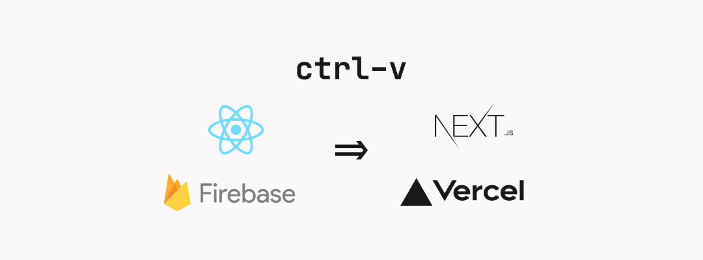
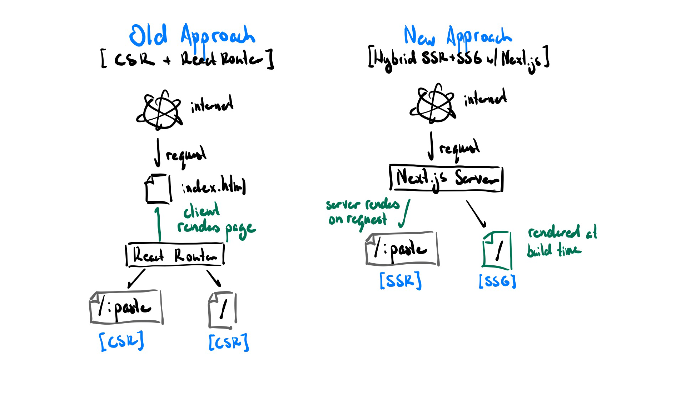

Ever since I released ctrl-v, friends from HackClub have kept bugging me about switching my current React code over to use Next.js. I wanted to see what all the fuss was about, so I finally set aside some time this weekend to rewrite the frontend using Next.js and deployed it on Vercel instead of Firebase Hosting. I thought it would take the whole weekend, but I managed to go from zero knowledge about Next.js to a fully finished refactor in just under 6 hours!
This will be more of a technical blog post walking through my process in converting ctrl-v from using React Router and Firebase Hosting to Next.js and Firebase.
Source code: https://github.com/jackyzha0/ctrl-v
Learning Next.js
I’m a very hands-on learner. I learn the fastest stumbling my way through a project with a framework I barely know my way around than watching multiple video examples or reading blog posts. Having a tangible project to work with and break as I learned things really helped speed up the learning process for me. That being said, here are a few other resources I found really helpful in my journey!
- Next.js in 100 seconds + good beginner tutorial
- Twiddling around with
create-next-app - Next.js official documentation for migrating from React Router
Why Next.js
The main reason I wanted to switch to Next.js is because it makes it dead easy to implement both Static Site Generation (SSG) and Server Side Rendering (SSR) for your React app. For those uninitiated, SSR and SSG are different approaches to rendering content.
In Client Side Rendering (CSR), the client is responsible for rendering the content on the page. All they receive is an empty HTML document, and a bunch of JavaScript bundles through which the browser populates the page. The downside of this approach is that no content exists on the page when it is first loaded. As a result, web crawlers won’t be able to find your content (not great for SEO), and you won’t get link previews to your content as the page metadata won’t have loaded. This is the behaviour you get when you use plain old React.
In Server Side Rendering (SSR), the server is responsible for rendering the content of the page and sending the fully rendered the content to the user to display. In this approach, all the content is already loaded when the user is receives it, we only need JavaScript to make it interactable (i.e. hydrate it). As a result, this approach is a lot more SEO friendly.
On the very other end of the spectrum, Static Site Generation (SSG), means that the server does all of the page rendering at build time rather than on each request. This has all the same benefits as SSR but doesn’t really make a lot of sense for this project as I don’t have a full list of pages I need to render handy.
A hybrid approach
However, Next.js doesn’t force you to choose between the two. It actually prides itself in just how easy they make it to switch between them. Here’s the approach I decided to take for ctrl-v.
In the old frontend, everything was completely client-side rendered. My ‘productionized’ application was quite literally an index.html with a bunch of JS bundles. It sucked as whenever I sent a ctrl-v link to a friend, there wouldn’t be a preview about what the content was and most people were scared to just open a random link like that (rightfully so). There was also a not-very-pleasant ‘loading paste…’ period before any content actually appeared on the screen.

I realized that there were only really two main types of pages
- View Paste (
/:paste) - Create Paste (
/)
Nothing on the create paste page actually required hitting the backend, it was effectively completely static. I could safely just replace that entire page and have it be statically generated at build time. The view paste page required me to make a call to ctrl-v’s backend API but I still wanted the page to have that content rendered on server so I opted for client side rendering on any view paste pages.
Steps
Replacing React Router with next/router
Next.js uses a file-based routing system rather than routes-as-code approach that React Router takes. I decided to first convert the new paste page as that would be completely SSG. Luckily, I had originally structured my React components into a pages folder so pulling out that component into a page wasn’t terrible.
I wasn’t super certain of how SSR worked right off the bat so I first played with the /raw/:paste page first before tackling the comparatively more scary /:paste page with password handling and actual error handling.
// old CSR
const Raw = ({hash}) => {
const { err, result } = useFetchPaste(hash)
return <RawText>{result?.content || err}</RawText>
}
export default Raw
// new SSR
export async function getServerSideProps(ctx) {
// ctx.params.hash allows us to access the slug (the :paste part of the url)
const data = await resolvePaste(ctx.params.hash)
return { props: { ...data } }
}
const Raw = ({error, data}) => {
return <div>
{/* Only load title/description metadata if no error */}
{!error && <NextHead data={data} />}
<RawText>
{/* Just render the content if it exists, otherwise render the errror */}
{data?.content || error}
</RawText>
</div>
}
export default RawThe biggest part I needed to wrap my head around was the getServerSideProps async function. I didn’t realize that the only job that getServerSideProps actually does, is fetch data and pass that data as props to your actual component. Once that clicked, the rest of the refactoring went relatively smoothly.
I had to refactor my useFetchPaste hook to just fetch data and then delegated the responsibility of state and password validation shenanigans to whatever component. I ended up changing the name to resolvePaste as it no longer followed the Rules of Hooks.
In hindsight, I probably should’ve done this step incrementally using something like Next.js’s rewrite rules to gradually transition ctrl-v from React Router to Next.js. Luckily I didn’t have that many pages to migrate but this is good to know for the future.
styled-components and theme provider
From what I’ve seen, Next.js doesn’t play nicely with styled-components out of the box. Throughout the entire previous step, I was looking at painfully broken CSS. Turns out you need to install an additional Babel plugin to add SSR support to styled-components. Then, I added a custom Document to pages/_document.js. This code augments the root <html> tag of our application which will allow us to inline our CSS styles.
// shamelessly stolen from
// https://github.com/vercel/next.js/blob/master/examples/with-styled-components/pages/_document.js
import Document from "next/document"
import { ServerStyleSheet } from "styled-components"
export default class StyledDocument extends Document {
static async getInitialProps(ctx) {
const sheet = new ServerStyleSheet()
const originalRenderPage = ctx.renderPage
try {
ctx.renderPage = () =>
originalRenderPage({
enhanceApp: (App) => (props) => sheet.collectStyles(<App {...props} />),
})
const initialProps = await Document.getInitialProps(ctx)
return {
...initialProps,
styles: (
<div>
{initialProps.styles}
{sheet.getStyleElement()}
</div>
),
}
} finally {
sheet.seal()
}
}
}As I was also using theme provider from styled-components, I needed a way to wrap the ThemeProvider component around everything. Luckily a custom App created by adding a pages/_app.js will allow us to do just that. This also allows us to add any ‘global’ structure like padding or margins around the edges.
import ThemeProvider from "../theme/ThemeProvider"
import GlobalStyle from "../theme/GlobalStyle"
const Main = styled.div`
margin-top: 10vh;
padding: 0 20vw 30px 20vw;
`
const App = ({ Component, pageProps }) => (
<ThemeProvider>
<GlobalStyle />
<Head>
<title>ctrl-v | a modern, open-source pastebin</title>
</Head>
<Main id="appElement">
<Component {...pageProps} />
</Main>
</ThemeProvider>
)
export default AppState caching for password pastes
This part stumped me for a good bit. I needed to find a way to do an initial data fetch, check to see if the paste has a password, prompt the user for a password, then reload the page data. I contemplated using SWR for data fetching but realized in the shower that it wouldn’t really make sense as the initial load is handled in the getServerSideProps function anyways. I realized the best way forward was to fetch the initial state in getServerSideProps then store it as a React State so I can update it when a password is entered and data is re-fetched. This way there are no page reloads to disrupt user experience and keeps code change minimal.
// simplified version of pages/[hash].js
export async function getServerSideProps(ctx) {
const data = await resolvePaste(ctx.params.hash)
return { props: { ...data } }
}
const ViewPaste = ({ data, unauthorized, error }) => {
const router = useRouter()
const { hash } = router.query // equivalent to ctx.params.hash
const [enteredPass, setEnteredPass] = useState("")
const [correctPass, setCorrectPass] = useState(!unauthorized)
const [clientData, setClientData] = useState(data)
const { content, language, expiry, title } = clientData
const getWithPassword = (password, errorCallback) => {
resolvePaste(hash, password)
.then((resp) => {
setCorrectPass(true)
setClientData(resp.data)
})
.catch((e) => errorCallback(e.response.data))
}
return (
<div>
{!error && <NextHead data={data} />}
...
<PasteInfo
hash={hash}
lang={language}
theme={theme}
expiry={expiry}
err={unauthorized ? "" : error}
/>
</div>
)
}
export default ViewPasteDeployment
Great! At this point, everything was working great — locally. Every developer knows just how much of a leap it is to go from local machine to hosted and on the cloud. Right?
My first thought was to see how difficult it would be to port my existing frontend on Firebase Hosting to run using Next.js instead. Turns out I would’ve needed to enable Firebase Functions and to do that I needed to enable the Blaze plan (pay as you go). Seeing just how much of a hassle the process was made me look for other alternatives.
Vercel really surprised me with how easy it was to get setup. All I had to do was signup for Vercel using my GitHub account and select a repository to import. It took a total of 5 minutes to go from GitHub repo to deployed website which was a first.
Funnily enough, the hardest part of this entire deployment process was deleting the old frontend off of Firebase. I accidentally deleted the entire project (including my Cloud Run deployed backend) twice and quite nearly misconfigured my domain.
Impact
All in all, trading 6 hours for such a huge quality-of-life improvement on a project that I personally use a lot has been absolutely worth it. To list a few tangible improvements:
- Smoother user experience (no more annoying ‘loading paste…’ messages)
- Cleaner codebase
- Better link previews (sending links to friends)
If you haven’t had the chance to try Next.js out for yourself and you’ve made it this far, you owe it to yourself to at least give it a shot. Thanks to the HackClub community (specifically Rishi, Safin, and Ani) for their constant encouragement and criticism of my ‘outdated’ tech stack.
Source Code: https://github.com/jackyzha0/ctrl-v
Try it out for yourself: https://ctrl-v.app/